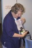

Australian
Amateur
Packet
Radio
Association
AAPRA NEWS
An archive of news stories that have appeared on the AAPRA web site.CLUB NOMINATIONS
Thanks to everyone who returned their club nomination form for the distribution of AAPRA assets. We received 31 nominations covering a total of 14 different clubs. Funds shall be distributed to these clubs in the next few months.2003 AGM/EGM
25/6/2003: The AGM and EGM for the Association was held on Sunday, 1st June at AAPRA HQ.The outcome of the motions put at the EGM was as follows:
Motion 1: Carried;
Motion 2: Not carried;
Motion 3: Carried;
Motion 4: Carried.
A full report on the AGM and EGM will appear in the forthcoming special issue of Digipeat.
For now, you can see all the pictures from the event here.
Wyong Field Day 2003
12/1/2003: AAPRA will again be at the Central Coast Field Day to be held at Wyong Racecourse on Sunday 23 February 2003. Sharing the AAPRA table will also be the APRS group; together acting as a one stop shop for all packet related matters.Drop in to our table to meet the AAPRA team and take the opportunity to restock your packet supplies with our special Field Day deals.
In addition to all the regular AAPRA stock, this year we will have a large quantity of equipment such as VHF and UHF (including Plessey 8000) transceivers and 2nd hand TNCs, which are now surplus to AAPRA requirements, and these will be sold at bargain prices. Be sure to be early as these will be snapped up by eager bargain hunters.
See you there!
2002 AGM
23/5/2002: The AAPRA AGM was held on 19th May, 2002 under clear skies and cool weather. The meeting attracted a number of visitors and the occasion was enjoyed by all. The future of the association was discussed at length and a detailed report will appear in the next issue of DIGIPEAT. Thanks to all who attended.BlakPak lives!
23/5/2002: A surge in interest in this top little modem has prompted the release of the final batch of BlakPak units. The TCM3105 modem chip used in this design is no longer available so our stocks will be strictly limited. If you want one, please let us know soon and they will be available shortly. BlakPak is described as the "best available" packet modem in the article on packet radio on page 50 of the May 2002 edition of Amateur Radio magazine.Wyong Field Day 2002
AAPRA committee members made an appearance at the 2002 Wyong Field Day on 24th February and had a very successful day. Many members dropped by for a chat and some new ones were also signed up. During the course of the day, approximately 500 ACA posters were given away to many eager recipients. The newly released shareware CD was a hot seller and the surplus 2m Plessey radios all found new homes. Thanks for visiting us!
2001 Christmas Party
The AAPRA + HADARC + MWRS combined Christmas Party was held under sunny skies on Sunday, 16th December. It was a great success with about 30 people attending. Many thanks to Jo, VK2KAA and John, XYM for hosting and cooking and to John, VK2ZOI for organising and liaison.
HADARC visit
 23rd October 2001: The AAPRA committee visited the Hornsby amateur radio club and gave presentations on various aspects of packet radio.{kind=link}
{kind=link}
Jim introduced the basics of packet radio and how to use BBSs. Gerard covered using digipeaters, the ROSE network and described VK2RNS. The picture on the right shows Jo explaining the YAM modem. On the left, John is pictured demonstrating the BlakPak modem with the BayCom software while David and Jim set up a second laptop with Winpack and a TNC. All-in-all, an educational night for everyone!
Thanks HADARC for making us welcome.
TransGrid Resolution
|
From Rob McKnight, VK2MT, 30th August 2001:
We have been officially informed that there will be a maximum figure of $300.00
attached to each existing Amateur Club that has equipment at a TransGrid site.
(The figure may be less, but definitely no more.) There won't be a charge
per antenna as was going to be the case - all existing and documented (by
TransGrid) antennas will be part of the deal. The only provisos being: - An Amateur Club has to have Public Liability Insurance of $10,000,000. - An Amateur Club has to have Volunteer Workers Insurance. - A Deed of Licence will be sent to the Club & will need to be signed & returned. - This $300 maximum rate could apply only to EXISTING Amateur tenants. (Still to be clarified.) - TransGrid retains the right to ask an Amateur Club to move their antennas or equipment if a new full-paying tenant requests access AND there is no space left on the tower or the building. This is not that bad at most sites.
Overall, these provisos are not too bad - a lot better than paying $3,000!. |
Save VK2RND!
| June 2001: Notification was received on the 5th of June that the VK2RND site on Mt Sugarloaf, west of Newcastle will be subject to exorbitant annual site fees applicable from the 1st of July. These charges are being forcibly imposed by the ACCC on all lessees of TransGrid sites. Unless we exert pressure on the ACCC and politicians to have this decision reversed, there will be no option but to close down the site, one of the most important in the network. This decision also affects voice repeaters and the communications systems of volunteer services such as WICEN and VRA at other sites. Please act now and save VK2RND! | |
TeleText - The Silent Republication
2001 AGM
After the formalities were over, members enjoyed sumptuous steaks, sausages and salad organised by Jo, VK2KAA. Thanks Jo! The office bearers were elected at the June committee meeting.
Wyong
 February 2001: Congratulations to Moss Webb, VK2DP, the winner of the Wyong Field Day
guessing competition and recipient of the AAPRA YAM 1200/2400/9600 bps modem.
Moss is pictured accepting his prize from Gerard, VK2IO. Thanks to all who entered the competition and renewed their
membership on the day and those who dropped by for a chat. With most items selling out it was a highly successful day for AAPRA!
February 2001: Congratulations to Moss Webb, VK2DP, the winner of the Wyong Field Day
guessing competition and recipient of the AAPRA YAM 1200/2400/9600 bps modem.
Moss is pictured accepting his prize from Gerard, VK2IO. Thanks to all who entered the competition and renewed their
membership on the day and those who dropped by for a chat. With most items selling out it was a highly successful day for AAPRA!
HF ROSE
Last update to this page: 17/4/04